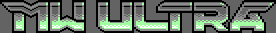
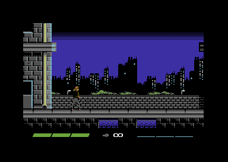

Games
Downloadable C64 game files are either .D64 disk images or .PRG (C64 native
executable) files. These can either be transferred onto the real C64
or run on a C64 emulator such as
CCS64 or
VICE.


MW ULTRA
In development
Compatibility: PAL/NTSC, fastloader + optional safe loading mode
Programming, graphics & sound effects by Cadaver
Additional drive programming by Ninja, Doc Bacardi & MagerValp
Exomizer by Zagon
Reinterpretation / reboot of the first Metal Warrior game, but now as a "semi-cinematic" action-adventure with shooting, fighting & stealth combined. Reprise the role of the
troubled musician Ian in a near-future world where the sun still doesn't shine much, but apart from that, expect surprises...
Work-in-progress page
|


Steel Ranger
Released in January 2018
Compatibility: PAL/NTSC, fastloader + optional safe loading mode
Programming, graphics and music + sound effects by Cadaver
Additional drive programming by Ninja, Doc Bacardi & MagerValp
Exomizer by Zagon
A Turrican / Metroid inspired action-adventure game. Set in the same universe as Hessian but two hundred years later, you
equip yourself with a Ranger armor suit in a desperate war for survival against an army of machines, and set out to explore their
installation on a distant, barren planet.
Steel Ranger is available as a physical disk edition
and as a digital edition from Psytronik Software.
A free demo version is also available on the digital edition page.
Trailer video
GitHub source code repository (demo version)
Work-in-progress archives
|


Hessian V1.2
Released in March 2018, originally released February 2016
Compatibility: PAL/NTSC, fastloader + optional safe loading mode
Programming, graphics and sound effects by Cadaver
Music by Cadaver & NecroPolo
Additional drive programming by Ninja, Doc Bacardi & MagerValp
Exomizer by Zagon
Take the role of Kim, a low-clearance security guard working a permanent night shift
(on her request) at the Throne Group Science Complex. One night, she wakes up inside
a cargo container converted to an improvised emergency operating room. All she remembers
are multiple unknown hostiles firing at the staff, heavy rounds hammering into her chest
and everything going black, then finally the shouted words filtering into her consciousness:
"Massive trauma.. Need artificial circulation.. Prepare the nanobot injection now!"
Among other changes, V1.2 improves the controls (easier to fire while ducked), adjusts game balance for more
ammunition dropped by enemies, and removes splash damage to player from own explosive weapons.
Hessian is available as a physical disk edition
and as a name-your-price digital edition from Psytronik Software.
In addition, there's the Covert Bitops V1.2 download version without the Psytronik goodies, full source code, and the archived work-in-progress diary:
Download Covert Bitops version
GitHub source code repository
Work-in-progress archives
|

|
Advanced Action Movie Simulator
Released in 2001 for C64 Crap Game Compo 2001
Compatibility: PAL/NTSC
Programming, graphics and music by Cadaver
|
|
You take the role of a true action movie hero in this ultimate
blasphemy of the multilevel movie license game genre. 4 challenging
and crappy levels await you: Car Chase Scene, Gunfight Scene, Romance
Scene and Hand-to-hand Combat Scene. Play at own risk.
Download game (PRG)
Download source code
|

|
BOFH:Servers Under Siege
Released in 2002
Compatibility: PAL/NTSC
Programming, graphics and sound effects by Cadaver
Music by Yehar
Pucrunch compressor by Pasi 'Albert' Ojala
Original PC game by Cadaver, Yehar, Kalle Niemitalo & Tuomas Mäkelä
|
|
As the Bastard Operator, you arrive late at work to find the building full of insane
paramilitary activists who don't care of human hostages but have taken all servers,
workstations & printers hostage instead and set up bombs at network equipment closets. Of course,
this can't be tolerated, so the logical course of action is to combat the activists
single-handedly.
BOFH is a C64 conversion of the overhead view tactical shoot'em-up first written
on PC in the year 2000, featuring 360 degrees movement, many different weapons and
a 7-floor building (based on real location!) to explore.
Download game (D64)
Download source code
|

|
Escape From New York
Released in 1999 for C64 Crap Game Compo 1999
Compatibility: PAL/NTSC
Programming, graphics and music conversion by Cadaver
Original music by John Carpenter & Alan Howarth
|
|
You control Snake Plissken, the true antihero, in his suicide
mission to rescue the President of United States who has crashlanded
into the "impossible to get out" prison that New York is in the future!
This game is a sidescrolling shoot'em up game, a bit in the spirit of Cobra, but
with even more extreme bugs introduced on purpose.
NOTE: This game is intended as a tribute, like the many Escape From New York /
Escape From L.A. fan WWW pages
but if anyone thinks this is a copyright infringement please
let us know and we'll remove the game
immediately.
Download game (PRG)
Download source code
|

|
Metal Warrior V1.6
Originally released in 1999, improved during 1999-2012
Compatibility: PAL/NTSC, selectable fastloader
Programming, graphics, music and sound effects by Cadaver
Drivecoding info from Ninja, Doc Bacardi & MagerValp
Exomizer by Zagon
|
|
A game set in the violent & polluted near future. The story starts with novice
metal guitarist Ian setting out to find who killed his musician friend,
but something larger awaits to be discovered...
This is a 8-way scrolling side-view action/adventure. Features
many different weapons, enemies, people to talk with, shops to buy equipment
from, cutscenes telling the story, full music & sound effects etc.
V1.6 adds new fastloader, which improves loading speed and also supports IDE64.
Download game (D64)
Download source code
|

|
Metal Warrior 2 V1.5
Originally released in 1999, improved during 2000-2012
Compatibility: PAL/NTSC, selectable fastloader
Programming, graphics, music and sound effects by Cadaver
Drivecoding info from Ninja, Doc Bacardi & MagerValp
Exomizer by Zagon
|
|
The sequel contains more detailed graphics, longer game, an experience level
system (similar to Castlevania II) and a password feature. To avoid spoiling
the game series, nothing is said of the plotline. To get the full story,
it is preferable to play these games in sequential order, starting from
the first!
V1.5 adds new fastloader, which improves loading speed and also supports IDE64.
Download game (D64)
Download source code
|

|
Metal Warrior 3 V1.4
Originally released in 2001, improved during 2001-2012
Compatibility: PAL/NTSC, selectable fastloader
Programming, graphics and sound effects by Cadaver
Music by Aeuk, Amanojaku, Cadaver, Crow, Hybrido, Neomancia, Necrotum, Temuz, Warlord
Drivecoding info from Ninja, Doc Bacardi & MagerValp
Exomizer by Zagon
|
|
The second sequel, with smooth 8-way scrolling, colorful background graphics,
multiple characters to play as, more RPG features (characters have 3 different
stats), larger playing area, time of day-effect (day becomes evening, then night).
V1.4 adds new fastloader, which improves loading speed and also supports IDE64.
Download game (D64)
Download source code
|

|
Metal Warrior 4 - Agents of Metal V1.2
Originally released in 2003, improved during 2004-2012
Compatibility: PAL/NTSC,
selectable fastloader
Agent concept by Cadaver & Malekith
Programming, graphics and sound effects by Cadaver
Music by Aeuk, Ansgaros, Barfington, Cadaver, Cage, Crow, Desperado, Malekith, Neomancia, Tarantula, Warlord
Drivecoding info from Ninja, Doc Bacardi & MagerValp
Exomizer by Zagon
|
|
The fourth and final part of Metal Warrior series. Ian, the protagonist of
the first game thought he had wielded a Gun for the last time, but after
an otherworldly encounter he is compelled to become an Agent to hunt for
the hidden truths..
V1.2 adds new fastloader, which improves loading speed and also supports IDE64, uses difficulty scaling
from the GBA version, and brings back the classic MW1-3 mutant enemy.
Download game (D64, 2 sides)
Download manual (Word & text formats)
Download V1.2 source code
|

|
Metal Warrior 4 - Dojo Preview V2
Released in 2002
Compatibility: PAL/NTSC, optional fastload & REU/SuperRAM buffering
Agent concept by Cadaver & Malekith
Programming, graphics and music by Cadaver
SuperRAM programming by Ninja
Exomizer by Zagon
|
|
This is an updated preview containing a stand-alone Dojo level (happens 10
years before the actual events of MW4). Note: the game has gone
through some changes and the preview is no longer accurately
representative of it..
Download preview (D64)
Download source code
|

|
Metal Warrior Amiga V1.1
Originally written in 1993, improved and released in 2004
Compatibility: Kickstart 1.2+, 512KB minimum memory
Programming, graphics, music and sound effects by Cadaver
Thanks to Xeron for OS-compatibility hints
|
|
Like its C64 counterpart, the game is set in the violent future. Ian, the
hessian Avenger, sets out to exact revenge on those who attacked his band,
and to uncover any larger conspiracies...
A multidirectionally scrolling action adventure. Released finally over 10
years after original completion, with some modifications (improved
OS-compatibility, partially rewritten text, dead-end situations removed).
Still, it's quite a weird and immature game so play at your own risk!
Download game (ADF)
Download source code
|

|
Metal Warrior 4 GBA V1.3
Originally released in 2006, improved during 2007-2012
Compatibility: Flashcart with at least 32kB SRAM save
Agent concept by Cadaver & Malekith
Programming, graphics and sound effects by Cadaver
Music by Aeuk, Ansgaros, Barfington, Cadaver, Cage, Crow, Desperado, Malekith, Neomancia, Tarantula, Warlord
|
|
This is a GBA conversion of Metal Warrior 4. It is in some ways improved,
some graphics for instance, and loads data during gameplay in near zero
time, but has smaller screen size compared to C64.
V1.3 tweaks game balance and brings back the classic MW1-3 mutant enemy.
Technical note: the GBA side engine runs just 6502 CPU & SID emulation
and has "API hooks" for graphics / loading / interrupt related functions,
so it is not actually emulating a C64 enviroment.
Download game (GBA rom)
Download source code
|

|
BOFH:Servers Under Siege PC V1.62
Originally released in 2000, improved during 2000-2007
Programming by Cadaver, Yehar & Kalle Niemitalo
Graphics by Cadaver & Yehar
Music by Yehar & Tuomas Mäkelä
|
|
This is the original PC version of BOFH:Servers under Siege.
It uses now the SDL library for crossplatform compatibility.
Precompiled binary is for win32 systems only, but source code
is included.
V1.62 fixes mission load/save in the editor.
Download game
|
| |